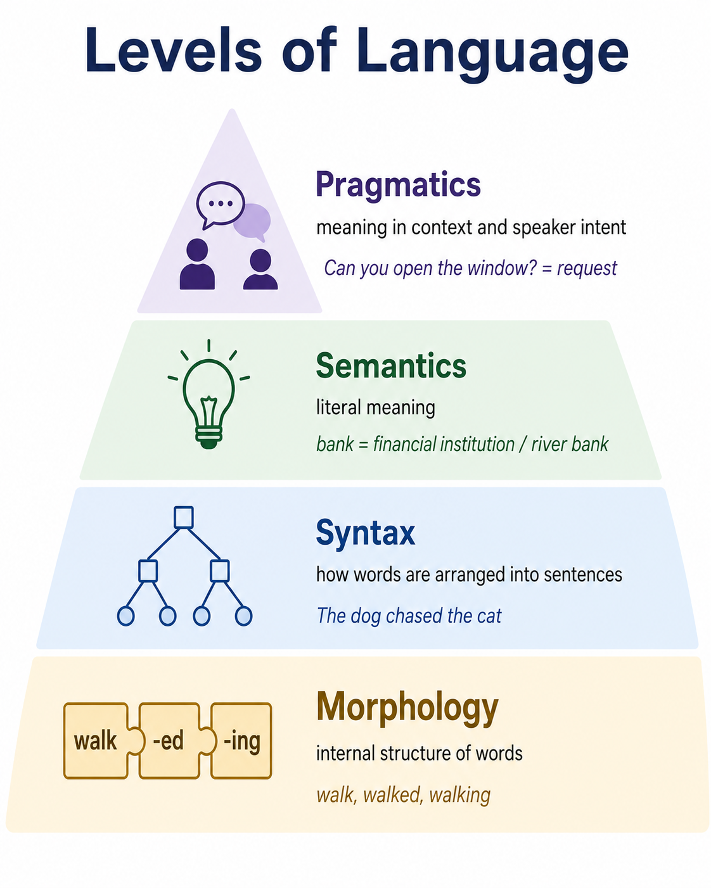
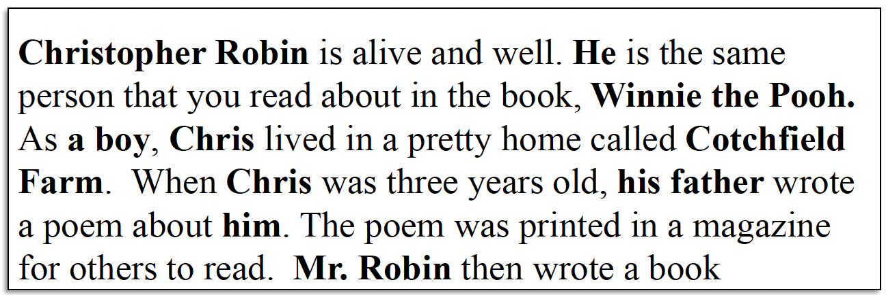
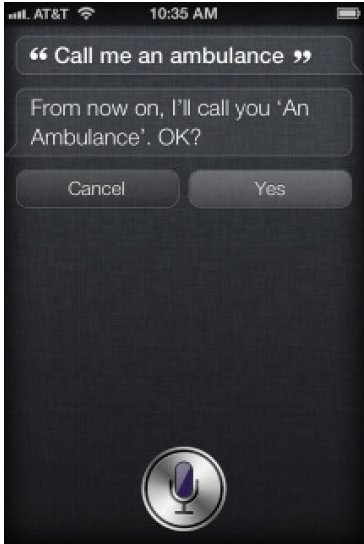

1.1 From Language To Data#
Natural Language Is Not Just “Unstructured Data”#
In data science, text is often described as unstructured data. This is useful when contrasting text with relational tables, but it can also be misleading.
Natural language is not without structure. In fact, it contains many overlapping forms of structure:
words and subwords
morphological patterns
grammatical relationships
sentence structure
semantic relationships
discourse structure
conversational conventions
social and pragmatic meaning
The difficulty is that these structures are rarely presented to a computer explicitly.
Consider a seemingly trivial task: count the words in a document.
Counting bytes is a straightforward computational operation. Counting words is not.
What should count as one word?
don't
New York
state-of-the-art
😊
中文
Even before we attempt to infer meaning, we have already encountered assumptions about language.
This distinction is important. NLP is not simply conventional data processing applied to a large collection of strings. It requires decisions about how language should be represented computationally.
Important
The challenge is that the computation over language requires assumptions about linguistic structure and meaning.
From Symbols to Meaning#
A computer can easily store the string:
The bank is closed.
But storing a sequence of characters is not the same as understanding what the sentence communicates.
The word bank might refer to:
a financial institution,
the side of a river,
or an action such as banking an aircraft.
Humans usually resolve the intended meaning from context.
The bank approved my loan.
The children sat on the river bank.
The spelling is nearly identical, but the interpretation is different.
This distinction points toward a central problem in NLP:
How can a computational representation preserve enough information about language for a system to perform a useful task?
Different NLP approaches answer this question differently [Eis19, JM26, Sar19].
A system might represent text using:
symbolic linguistic rules,
word counts,
probabilities,
sparse feature vectors,
dense embeddings,
contextual neural representations,
or hidden states learned by a large language model.
Language Operates at Multiple Levels#
One reason natural language is difficult computationally is that meaning emerges from interactions across multiple linguistic levels.

Fig. 3 Multiple Levels of Language Structure#
Morphology
Morphology concerns the internal structure of words.
Consider:
walk
walked
walking
walker
These forms are related, but they are not identical strings. A computational system must decide whether those relationships matter for the task it is performing.
Syntax
Syntax concerns the structural relationships among words in a sentence.
Compare:
The dog chased the cat.
The cat chased the dog.
The same content words appear in both sentences, but their relationships change the meaning completely.
A simple bag of words would treat these sentences as nearly identical.
Semantics
Semantics concerns meaning.
Words that look different may express similar concepts:
car
automobile
vehicle
Meanwhile, identical words can express different meanings depending on context.
Pragmatics
Pragmatics concerns how meaning interacts with intention, situation, and social context.
Consider:
Can you open the window?
At the level of literal syntax, this is a question about someone’s ability.
In ordinary conversation, it is usually interpreted as a request.
This distinction matters for computational systems because language does not merely describe the world. It can also perform actions within it.
Dialogue research therefore treats utterances as forms of action, often called speech acts or dialogue acts. [JM26]
A sentence might function as:
an assertion,
a request,
a promise,
an apology,
a command,
or another socially meaningful action.
This becomes especially important when language models are embedded inside systems capable of taking actions.
Ambiguity Is a Core Property of Language#
Consider the classic NLP example:
I made her duck.
The sentence admits several interpretations. Can you name a few?
Jurafsky and Martin use this example to illustrate a broader insight: many language-processing problems can be viewed as selecting among multiple plausible linguistic interpretations. [JM26]
We can describe some of the uncertainty more systematically:
Level |
Question |
|---|---|
Morphological |
What grammatical role can each word take? |
Lexical |
Which sense of |
Syntactic |
How are the words structurally related? |
Semantic |
Who did what to whom? |
Pragmatic |
Which interpretation is plausible in context? |
Important
Ambiguity is not noise that can simply be cleaned away.
It is a fundamental property of natural language.
A central goal of NLP is therefore not to eliminate ambiguity from language, but to construct models that can resolve useful ambiguities from context.
Structure and Meaning Are Not the Same Thing#
A famous sentence introduced by Noam Chomsky illustrates another important distinction:
Colorless green ideas sleep furiously.
The sentence follows recognizable English syntactic patterns, yet its literal interpretation is difficult to make coherent.
That distinction leads to several computational questions:
Can a model recognize grammatical patterns?
Can it recognize semantic relationships?
Can it distinguish common language from merely possible language?
Does a highly probable sequence necessarily make sense?
Humans Are Part of the NLP System#
Language technologies are not interpreted in isolation. They interact with people who bring expectations about communication, intelligence, personality, and intention.
One of the earliest demonstrations of this phenomenon was ELIZA, Joseph Weizenbaum’s 1960s conversational program.
ELIZA used comparatively simple pattern-matching rules. Yet some users responded to the system as though it possessed substantially more understanding than its implementation supported.
This tendency became associated with what is now commonly called the ELIZA effect: people may attribute understanding, intelligence, or intention to computational systems because their outputs resemble human communication.
An LLM can produce fluent explanations, apologies, recommendations, summaries, and arguments.
Warning
Linguistic fluency is evidence about linguistic behavior, not proof of human-like understanding.
When evaluating an NLP system, we must distinguish what the system produces from what we infer about the mechanism producing it.
From Linguistic Rules to Learned Representations
Early NLP research frequently represented linguistic knowledge explicitly through:
grammars,
lexicons,
symbolic rules,
manually designed features,
and structured representations.
Statistical NLP shifted much of the emphasis toward learning patterns from language data.
Machine-learning approaches learned mappings between text features and outcomes such as:
document → topic
review → sentiment
email → spam / not spam
sentence → named entities
Neural NLP pushed this further by learning the representations themselves.
Rather than designing every feature manually, neural systems can learn dense numerical representations that capture useful relationships from data.
Large language models extend this trajectory. While Traditional NLP systems were often designed around a specific task, Large language models support a more general interface.
Foundational Questions#
Beneath the new NLP interface are familiar foundational questions.
Tokenization#
How should language be divided into computational units?
Representation#
How should those units be encoded numerically?
Similarity#
How can we determine whether two texts express related information?
Classification#
How can a system choose among possible categories or interpretations?
Context#
How much surrounding information is necessary to interpret an utterance?
Retrieval#
How can a system identify relevant information from a larger collection?
Evaluation#
How do we determine whether the output is correct, useful, fair, grounded, or safe?
Natural Language Processing, or NLP, is the area of artificial intelligence concerned with computational methods for analyzing, representing, understanding, and generating human language. NLP includes tasks such as text classification, information extraction, search, question answering, translation, summarization, sentiment analysis, speech recognition, and text generation.
NLP vs LLM: What’s the difference?#
Modern NLP increasingly includes large language models (LLMs), but NLP is broader than LLMs.
Note
Big idea: Modern generative AI did not make traditional NLP obsolete. LLMs still operate on text representations, tokens, learned language patterns, similarity, classification-like decisions, information retrieval, and other concepts developed throughout NLP.
LLMs are a powerful subset of NLP models characterized by their massive size, extensive training data, and ability to perform a wide range of language tasks with minimal task-specific training. Models like the Llama, GPT, or Claude series are examples of LLMs that have revolutionized what’s possible in NLP. Source: https://huggingface.co/docs/course/chapter1/1
Linguistic Challenges#
Try out these challenges: Challenge 1: Who is Mr.Robin?

Fig. 4 NLP challenge example 1: Coreference.#
Challenge 2: Have a seat
Fig. 5 Example A: Ambiguity#

Fig. 6 Example B: Ambiguity#
Challenge 3: Informal Communication
Do you know these abreviations?
ROFL
ICYMI
TL;DR
NVM
TGIF
TBH
Answers ROFL: Rolling on floor laughing. ICYMI: In case you missed it. TL;DR: Too long, didn’t read. LMK: Let me know. NVM: Nevermind. TGIF: Thank goodness it’s Friday. TBH: To be honest.
Terminology#
Natural Language Processing (NLP) The broad field concerned with computational methods for working with human language. NLP includes tasks such as classification, information extraction, search, translation, summarization, speech recognition, and text generation.
Natural Language Understanding (NLU) A subset of NLP focused on interpreting language. NLU tasks may involve identifying intent, extracting entities, determining sentiment, resolving meaning, or answering questions about text.
Natural Language Generation (NLG) A subset of NLP focused on producing human-readable language. Examples include generating summaries, responses, reports, translations, and conversational output.
Language Model (LM) A computational model that learns patterns in language and assigns probabilities to sequences of words or tokens. Modern language models are commonly trained to predict tokens based on surrounding context.
Large Language Model (LLM) A language model trained on very large datasets with a large number of learned parameters. Modern LLMs are typically based on transformer architectures and can perform many NLP tasks through prompting, fine-tuning, retrieval, or other forms of adaptation.
Generative AI A broader category of artificial intelligence systems designed to generate new content, including text, images, audio, video, and code. LLMs are one important type of generative AI, but generative AI is not limited to language.
Transformer A neural network architecture introduced in 2017 that uses an attention mechanism to model relationships between elements in a sequence. Transformers became the foundation of most modern large language models.
Token A unit of text processed by a language model. A token may represent a word, part of a word, punctuation, or another text unit depending on the tokenizer.
Embedding A numerical vector used to represent a word, token, sentence, document, or other object. Embeddings allow computational systems to compare and process language mathematically.